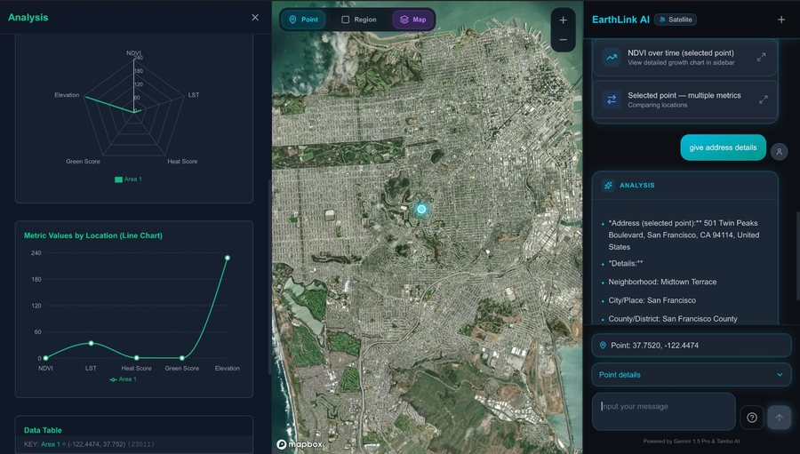
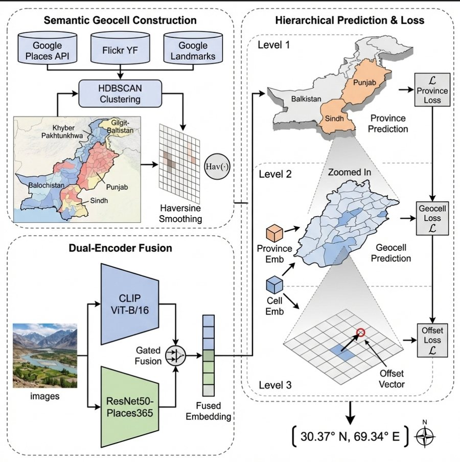
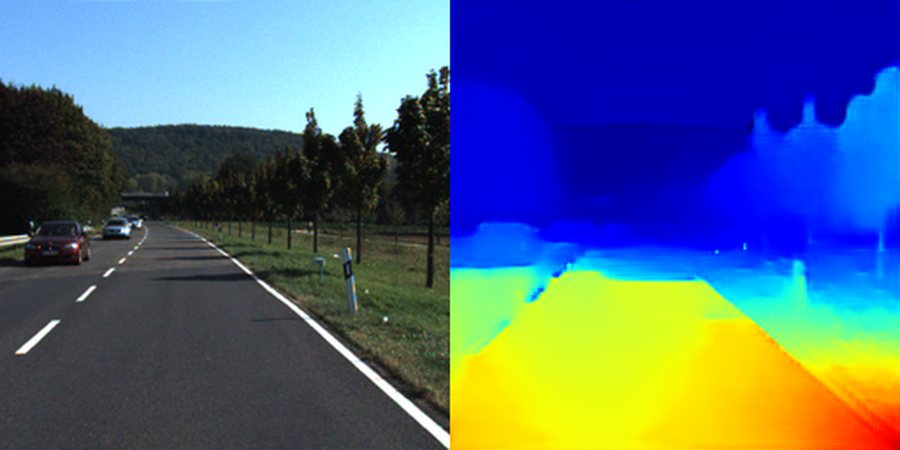
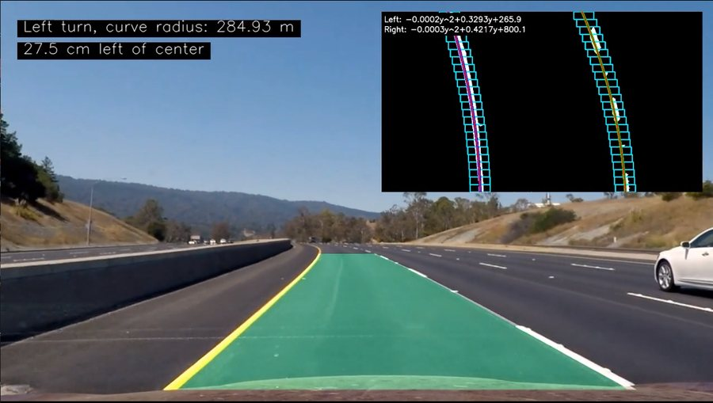

Projects
Systems I built to learn a specific architecture or modality. My research work is on the research page.
Selected
-
EarthLink AI
Feb 2026- 1st Place Overall EnviroCast Global Engineering Outlook Hackathon
- Best Social or Environmental Contribution ORIGIN Hackathon
An agentic geospatial platform that answers plain questions from satellite data. A Gemini-driven agent loop orchestrates FastAPI tools over Sentinel-2 imagery (NDVI, land surface temperature, built-up index, elevation), with results in a Next.js and Mapbox GL interface.
product UI
-
GEOPAK
Dec 2025 – Feb 2026Province-aware hierarchical image geolocation for Pakistan. Dual vision encoders feed a geocell-based inference stage that resolves the province first and then narrows within it, so the model can use regional visual priors rather than regressing coordinates across the whole country at once.
3-stage province, geocell, then offset inferencearchitecture
-
DeepFaceEdit
Jun–Jul 2025A desktop application for face synthesis and latent-space exploration on StyleGAN2-ADA. A manipulation engine edits semantic attributes through learned direction vectors in W+ space, and a projection module maps real photographs back into the generator's latent space. dlib landmark alignment runs before projection to preserve identity.
18% lower L2 reconstruction error vs. baselinebefore / after -
Image2Depth
Jul 2025Monocular depth estimation framed as image-to-image translation: a Pix2Pix system with a skip-connected U-Net generator and a PatchGAN discriminator, trained on dashboard RGB frames, giving sharper depth boundaries than baseline CNN regressors. Ray Tune (ASHA) drove hyperparameter search, tracked with W&B and MLflow.
23.8% lower MAE than baseline CNN regressors31% faster convergence via ASHA searchmodel output
-
Advanced Lane Detection
Apr–May 2025An ADAS-style lane detection pipeline written from scratch in OpenCV and NumPy, with no learned components. It covers camera calibration and distortion correction, a perspective transform to bird's-eye view, binary thresholding, sliding-window lane-pixel search and second-order polynomial fitting. Curvature and vehicle offset are recovered in meters by mapping image space to metric scale.
94.2% pixel-level accuracy, validated frame by framevideo frame
Reproductions & smaller experiments
Papers I reimplemented, and standalone models built to test a single idea.
- NeRF Minimal PyTorch reimplementation of Neural Radiance Fields for 3D view synthesis.
- Knowledge Distillation TensorFlow reproduction: compact student models at minimal performance cost.
- XRayGAN Synthetic chest X-ray generation; 89.3% ResNet classifiability on generated samples.
- Pix2Pix Sat2Map Satellite imagery to map-tile translation, SSIM 0.82.
- Load Forecasting LSTM model for short-horizon electricity demand prediction.
- Face Reconstruction PCA and tree-based regressors (scikit-learn) predicting occluded facial structure.
- NeuroInk Neural style transfer built on VGG19 feature statistics.